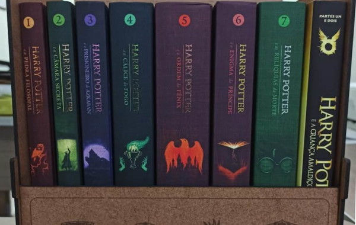
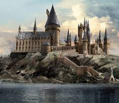

Harry Potter é uma série de sete romances de fantasia escrita pela autora britânica J. K. Rowling. A série narra as aventuras de um jovem chamado Harry James Potter, que descobre aos 11 anos de idade que é um bruxo ao ser convidado para estudar na Escola de Magia e Bruxaria de Hogwarts.
A Saga Harry Potter é a série mais bem sucedida da história do cinema mundial..
Desde o lançamento do primeiro romance, Harry Potter e a Pedra Filosofal, em 26 de junho de 1997, os livros ganharam uma imensa popularidade, aclamação da crítica e foram um sucesso comercial em todo o mundo. A série também recebeu algumas críticas, incluindo a preocupação com o tom cada vez mais sombrio conforme a história progredia.
Os livros são, por ordem de publicação: Harry Potter e a Pedra Filosofal, Harry Potter e a Câmara Secreta, Harry Potter e o Prisioneiro de Azkaban, Harry Potter e o Cálice de Fogo, Harry Potter e a Ordem da Fênix, Harry Potter e o Enigma do Príncipe e Harry Potter e as Relíquias da Morte. E temos para adicionar Harry Potter e a Criança Amaldiçoada que é uma peça de teatro de duas partes escrita por Jack Thorne e baseada na história da autora J.K. Rowling.

Por ser uma série na qual cada livro equivale a cerca de um ano de vida do protagonista, seu conteúdo amadurece conforme Harry cresce. Os leitores que começaram a ler a saga ainda muito jovens também vão amadurecendo enquanto lêem. A estrutura da história, inclusive, torna-se mais complexa e sofisticada a cada volume. Os livros de Rowling se passam nos anos 1990, na Inglaterra "trouxa" moderna, com carros, telefones e videogames. Os problemas no mundo mágico são sólidos e reais como os do nosso mundo - preconceito, depressão, ódio, sacrifício, pobreza, morte.
